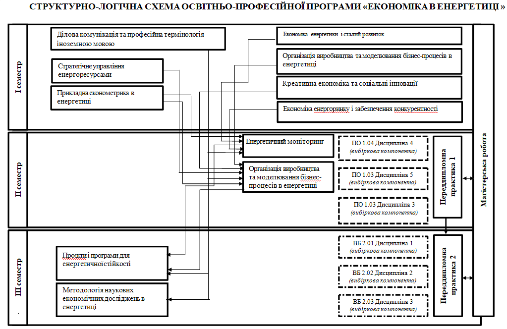

Рівень вищої освіти: магістр
Галузь знань: C - Соціальні науки, журналістика, інформація та міжнародні відносини
Спеціальність: C1 - Економіка та міжнародні відносини
Виконала: студентка групи КН-25-1 Велика Катерина
Підготовка висококваліфікованих професіоналів з економіки в енергетиці, які володіють сучасним економічним мисленням, теоретичними знаннями і прикладними навичками, здатних ефективно вирішувати системні проблеми, створюючи нові механізми для сприяння економічному зростанню та розбудові енергетичної інфраструктури.
| Код | Назва навчальної дисципліни | Кількість кредитів ЄКТС | Форма підсумкового контролю |
|---|---|---|---|
| Обов'язкова частина | |||
| Цикл 1 Дисципліни загальної підготовки | |||
| ЗП.01 | Методологія наукових економічних досліджень в енергетиці | 4 | залік |
| ЗП.02 | Креативна економіка та соціальні інновації | 3 | залік |
| ЗП.03 | Ділова комунікація та професійна термінологія іноземною мовою | 3 | залік |
| Цикл 2 Дисципліни професійної підготовки | |||
| ПП.01 | Проєкти і програми для енергетичної стійкості | 4 | залік |
| ПП.02 | Прикладна економетрика в енергетиці | 5 | екзамен |
| ПП.03 | Стратегічне управління енергоресурсами | 5 | екзамен |
| ПП.04 | Економіка енергетики і сталий розвиток | 5 | залік, КР |
| ПП.05 | Економіка енергоринку і забезпечення конкурентності | 4 | залік |
| ПП.06 | Організація виробництва та моделювання бізнес-процесів в енергетиці | 8 | залік, КР |
| ПП.07 | Енергетичний моніторинг | 4 | екзамен |
| ПП.08 | Переддипломна практика | 9 | екзамен |
| ПП.09 | Кваліфікаційна (магістерська) робота | 12,0 | Публічний захист кваліфікаційної (магістерської) роботи |
| Загальний обсяг обов'язкової частини | 66 | ||
| Вибіркова частина | |||
| Цикл 1 Дисципліни із кафедрального каталогу* | |||
| ПО 1.01 | Дисципліна 1 | 5,0 | Залік |
| ПО 1.02 | Дисципліна 2 | 5,0 | Залік |
| ПО 1.03 | Дисципліна 3 | 5,0 | Залік |
| Цикл 2 Дисципліни із загальноуніверситетського каталогу** | |||
| ВБ 2.01 | Дисципліна 1 | 3,0 | Залік |
| ВБ 2.02 | Дисципліна 2 | 3,0 | Залік |
| ВБ 2.03 | Дисципліна 3 | 3,0 | Залік |
| Загальний обсяг вибіркових компонент: | 24 | ||
| ЗАГАЛЬНИЙ ОБСЯГ ОСВІТНЬОЇ ПРОГРАМИ | 90 | ||
